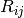
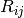
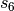
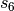
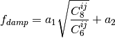

Interface to DFTD3 by S. Grimme¶
Code author: Lori A. Burns
Section author: Lori A. Burns
PSI4 contains code to interface to the DFTD3 program of S. Grimme, which is freely downloadable from http://toc.uni-muenster.de/DFTD3/).
Installation¶
Follow the instructions provided with the source to build the DFTD3 program (essentially, unpack the source, edit the Makefile to select a Fortran compiler, and run make). For the moment, you must apply a patch, psi4/lib/scripts/patch_grimme_dftd3, to the dftd3 source before building. To be used by PSI4, the program binary (dftd3) must be found in your PATH. If PSI4 is unable to execute the binary, an error will be reported.
>>> cd dftd3
>>> ls
dftd3.tar
patch_grimme_dftd3
>>> tar -xvf dftd3.tar
copyc6.f
dftd3.f
Makefile
man.pdf
pars.f
param
>>> patch < patch_grimme_dftd3
patching file Makefile
patching file dftd3.f
>>> make
making dftd3.o from dftd3.f
gfortran -O -c dftd3.f -o dftd3.o
making copyc6.o from copyc6.f
gfortran -O -c copyc6.f -o copyc6.o
gfortran dftd3.o copyc6.o -o ./dftd3
>>> ls
Makefile copyc6.o dftd3.f dftd3.tar param patch_grimme_dftd3
copyc6.f dftd3 dftd3.o man.pdf pars.f
Theory¶
The local or semilocal character of conventional density functionals
necessarily leads to neglect of the long-range correlation interactions
which capture attractive van der Waals forces. Initially proposed by Yang
[Wu:2002:515] and assiduously developed by Grimme, [Grimme:2004:1463]
[Grimme:2006:1787] [Grimme:2010:154104] the DFT+Dispersion method
appends to the base functional a scaled, damped, and fitted leading term
to the well-known dispersion energy series,  . The DFT-D2 [Grimme:2006:1787] variant
takes the explicit form below. Here, dispersion coefficients,
. The DFT-D2 [Grimme:2006:1787] variant
takes the explicit form below. Here, dispersion coefficients,
 , obtained from the geometric mean of tabulated elemental
values, are summed over interatomic distances, , modulated
by a damping function,
, obtained from the geometric mean of tabulated elemental
values, are summed over interatomic distances, , modulated
by a damping function,  , that gradually activates
the dispersion correction (at a rate characterized by
, that gradually activates
the dispersion correction (at a rate characterized by  )
over a distance characterized by the sum of the two atomic vdW radii,
)
over a distance characterized by the sum of the two atomic vdW radii,
 , while an overall scaling term, , is optimized
to be unique to each
, while an overall scaling term, , is optimized
to be unique to each  functional. ( is
sometimes allowed to vary as well.)
functional. ( is
sometimes allowed to vary as well.)
(1)

Grimme recently presented a refined method, DFT-D3, [Grimme:2010:154104]
which incorporates an additional  term in the dispersion
series and adjusts the
term in the dispersion
series and adjusts the  combination formula and damping
function. The individual atomic
combination formula and damping
function. The individual atomic  are interpolated from
several reference values based upon coordination numbers extracted from
the molecular structure, rather than assigned solely by atomic identity as
in DFT-D2, and thereby incorporate some awareness of the chemical
environment into an otherwise largely heuristic correction. The -D3
dispersion has the following form, where
are interpolated from
several reference values based upon coordination numbers extracted from
the molecular structure, rather than assigned solely by atomic identity as
in DFT-D2, and thereby incorporate some awareness of the chemical
environment into an otherwise largely heuristic correction. The -D3
dispersion has the following form, where  and
and  are the customary nonunity parameters fitted for individual functionals.
are the customary nonunity parameters fitted for individual functionals.
(2)

A modified damping scheme for DFT-D3 using the rational damping form of
Becke and Johnson was introduced in [Grimme:2011:1456]. The parameters
fit for individual functionals are now , ,
 , and
, and  .
.


All parameters characterizing the dispersion correction are taken from http://toc.uni-muenster.de/DFTD3/ or else from the literature.
Running DFTD3¶
A number of a posteriori dispersion corrections are available in PSI4. While most are computed within PSI4’s codebase (-D1, -D2, -CHG, -DAS2009, -DAS2010), the -D3 correction and its variants are available only through the DFTD3 program. Once installed, the dftd3/PSI4 interface is transparent, and all corrections are interfaced exactly alike.
Dispersion corrections are built into DFT functionals, so appending an a posteriori correction to a computation is as simple as energy('b2plyp-d') vs. energy('b2plyp'). For example, the following input file computes (with much redundant work) for water a B3LYP, a B3LYP-D2, and a B3LYP-D3 (zero-damping) energy.
molecule h2o {
O
H 1 1.0
H 1 1.0 2 104.5
}
set {
basis cc-pVDZ
}
energy('b3lyp')
energy('b3lyp-d')
energy('b3lyp-d3')
Consult the table -D Functionals to see for each functional what corrections are available and what default parameters define them. The dispersion correction is available after a calculation in the PSI variable DISPERSION CORRECTION ENERGY. By default, the output from the dftd3 program is suppressed; to see it in the output file, set print > 2.
| Extension [1] | Variant and Computing Program | DFT_DISPERSION_PARAMETERS |
|---|---|---|
| -D | alias to -D2P4 | |
| -D1 | -D1 [2] within PSI4 | |
| -D2 | alias to -D2P4 | |
| -D2P4 | -D2 [3] within PSI4 | [] |
| -D2GR | -D2 [3] through dftd3 | [, ] |
| -D3 | alias to -D3ZERO | |
| -D3ZERO | -D3 [4] w/ original zero-damping through dftd3 | [, , , ] |
| -D3BJ | -D3 [5] w/ newer Becke-Johnson rational damping through dftd3 | [, , , ] |
Footnotes
| [1] | Note that there are functionals with these extensions (e.g., wB97X-D) that, not being Grimme corrections, have nothing to do with this table. |
| [2] | [Grimme:2004:1463] |
| [3] | (1, 2) [Grimme:2006:1787] |
| [4] | [Grimme:2010:154104] |
| [5] | [Grimme:2011:1456] |
A few practical examples:
DFT-D2 single point with default parameters (dftd3 not called)
energy('bp86-d')
DFT-D3BJ optimization with default parameters
optimize('pbe-d3bj')
DFT-D2 optimization with custom s6 parameter
set dft_dispersion_parameters [1.20] optimize('b3lyp-d2')DFT-D3ZERO single point (b3lyp) with custom s8 parameter (reset all four values)
set dft_dispersion_parameters [1.0, 2.0, 1.261, 14.0] energy('b3lyp-d3')
If only dispersion corrections (rather than total energies) are of interest, the dftd3 program can be run independently of the scf through the python function run_dftd3(). (This function is the same PSI4/dftd3 interface that is called during an scf job.) This route is much faster than running a DFT-D energy.
Some set-up:
molecule nene { Ne Ne 1 2.0 } nene.update_geometry()The same four dispersion corrections/gradients as the section above:
>>> print nene.run_dftd3('bp86', 'd', dertype=0) -7.735e-05 >>> E, G = nene.run_dftd3('pbe', 'd3bj') >>> print G [[0.0, 0.0, -1.1809087569358e-05], [0.0, 0.0, 1.1809087569358e-05]] >>> E, G = nene.run_dftd3('b3lyp', 'd2', {'s6': 1.20}) >>> print E -8.84e-05 >>> E, G = nene.run_dftd3(dashlvl='d3', dashparam={'s8': 2.0, 'alpha6': 14.0, 'sr6': 1.261, 's6': 1.0}) >>> print E -0.00024762
- run_dftd3(self, func=None, dashlvl=None, dashparam=None, dertype=None)[source]¶
Function to call Grimme’s dftd3 program (http://toc.uni-muenster.de/DFTD3/) to compute the -D correction of level dashlvl using parameters for the functional func. The dictionary dashparam can be used to supply a full set of dispersion parameters in the absense of func or to supply individual overrides in the presence of func. Returns energy if dertype is 0, gradient if dertype is 1, else tuple of energy and gradient if dertype unspecified. The dftd3 executable must be independently compiled and found in PATH.